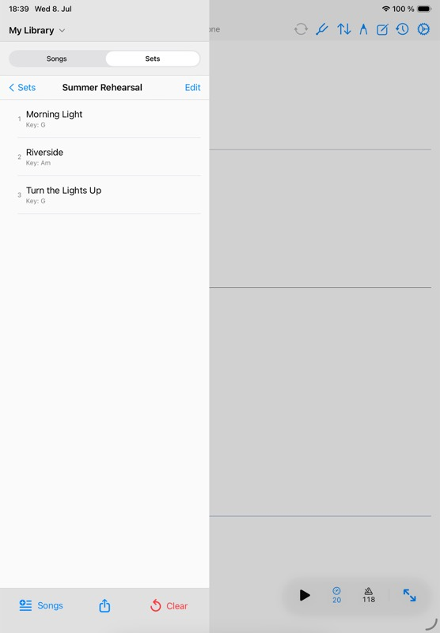

Share out
Exporting
Exports let you share a single chart, selected songs, or a full set outside Songivo.
Use exports when another workflow needs a file: printing, emailing, archiving, moving charts to another app, or sending a set summary to the band.

Export options
- Export the current song as PDF when one chart is needed outside Songivo.
- Export selected songs into one combined PDF.
- Export setlist summaries as text.
- Export a set overview or a full combined set PDF package.

Export a set
- Open the setlist.
- Choose the export action.
- Select summary, overview, or full set PDF depending on the target.
- Use the share sheet to save, send, print, or transfer the file.
- Review the exported order before distributing it.
Before sharing
Check copyright, CCLI, and performance-use requirements before distributing charts outside your own device or band workflow.